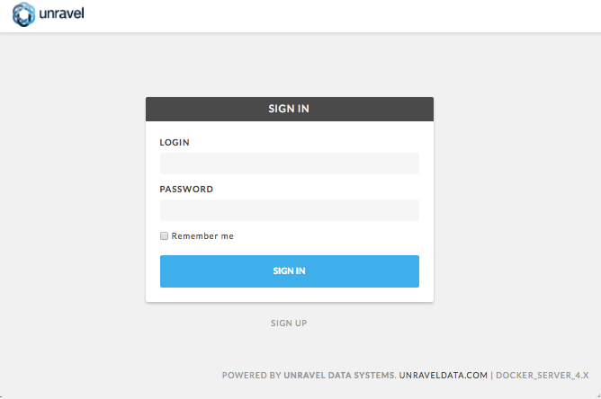

Part 1: Install Unravel Server on MapR
Introduction
This topic explains how to deploy Unravel Server 4.0 on the MapR converged data platform. These instructions apply to Unravel Server 4.0. For older versions of Unravel Server, contact Unravel Support.
Workflow Summary
Pre-installation check
Configure the host machine.
Install the Unravel Server RPM on the host machine.
Configure Unravel Server (basic/core options).
Log into Unravel Web UI.
(Optional) Configure Unravel Server (advanced options).
Table of Contents
3. Configure Unravel Server (Basic/Core Options)
5. (Optional) Configure Unravel Server (Advanced Options)
Pre-Installation Check
The following installation requirements must be met for successful installation of Unravel.
Platform Compatibility
MapR 5.1
Hadoop 1.x - 2.x
Kerberos
Hive 0.9.x - 1.2.x
Spark 1.3.x - 2.0.x
Hardware
Architecture: x86_64
Cores: 8
RAM: 64GB minimum
Disk:
/usr/local/unravelwith 2.5GB free minimumDisk:
/srv/unravelwith 500GB free minimumFor 10,000+ MR jobs per day, two or more gateway/edge nodes are recommended
Software
Operating System: RedHat/Centos 6.4 - 7.3
libaio.x86_64installedSELINUX=permissive(or disabled) should be set in/etc/selinux/configHDFS+Hive+YARN client/gateway, Hadoop and Hive commands in
PATHIf Spark is in use, Spark client gateway
LDAP (AD or Open LDAP) compatible for Unravel Web UI user authentication (Open signup by default)
On Unravel Edge-node server, please do not have zookeeper installed in same server
Access Permissions
If Kerberos is in use, a keytab for principal hdfs (or read-only equivalent) is required for access to:
Access to YARN’s “done dir” in HDFS
Access to YARN’s log aggregation directory in HDFS
Access to Spark event log directory in HDFS
Access to file sizes under HIve warehouse directory
Access to YARN Resource Manager REST API
principal needs right to find out which RM is active
JDBC access to the Hive Metastore (read-only user is sufficient)
Network
Port 3000 (or 4020) from users and entire cluster to Unravel Web UI
HDFS ports open from Hadoop cluster to Unravel Server(s)
For MR1, TaskTracker port open from Hadoop cluster to Unravel Server(s)
For MR1/YARN, Hive Metadata DB port open to Unravel Server(s) for partition reporting
UDP and TCP port 4043 open from entire cluster to Unravel Server(s)
For Oozie, port 11000 open from Unravel Server(s) to the Oozie server
Resource Manager (RM) port 8032 from Unravel Server(s) to the RM server(s)
Port 4176, 4181 through 4189, 3316, 4091 must be available for localhost communication between Unravel daemons or services
1. Configure the Host Machine
Allocate a Cluster Gateway/Edge/Client Host with HDFS Access
Install mapr-client to enable the hadoop fs command.
Configure the Host Before installing the RPM
Run the following commands on Unravel Server as
root:sudo useradd -g mapr unravel hadoop fs -mkdir /user/unravel hadoop fs -chown unravel:mapr /user/unravel
If MapR tickets are enabled, check mapr ticket for users
unravelandmapron target host now. You might need to export ticket environment variables in/etc/unravel_ctlfirst.Check available RAM to ensure availability:
free -g
For instructions on adjusting RAM allocated to MapR-FS (mfs), see https://community.mapr.com/docs/DOC-1209. For example, edit
/opt/mapr/conf/warden.confas follows:service.command.mfs.heapsize.maxpercent=10
(only change this setting on the Unravel gateway/client machine). And the restart mfs.
2. Install the Unravel Server RPM on the Host Machine
Get the Unravel Server RPM
Copy the RPM from the Unravel distribution server to the host machine using the username and password given to you by Unravel Support:
For the free trial version:
scp "unraveltrial@trial.unraveldata.com:unravel-4.0-*.x86_64.rpm" .
For the enterprise version:
scp $USER@dist.unraveldata.com:unravel-4.0-*.x86_64.rpm.$timestamp .
The precise RPM filename will vary. The version has the structure x.y.b where b is a build number that is imposed as an RPM epoch which means it takes precedence over version numbers for determining what is more up-to-date. The Unravel build numbers always increase and are allocated so that they respect the ordering of x.y versioning.
Install the Unravel Server RPM
Replace the asterisks as needed to be more selective.
sudo rpm -U unravel-4.0*.x86_64.rpm*
The installation creates /usr/local/unravel/ which contains the executables, scripts, and settings. User unravel is created. The initial internal database and other durable state are put in /srv/unravel/ for larger storage. By default, the installation supports YARN.
The master configuration file is in /usr/local/unravel/etc/unravel.properties and the logs are in /usr/local/unravel/logs/. The RPM installation creates user unravel if it does not already exist; /etc/init.d/unravel_* scripts for controlling its services as well as /etc/init.d/unravel_all.sh which can be used to manually stop, start, and get status of all daemons in proper order.
The RPM installation also creates an HDFS directory for Hive Hook information collection.
During initial install, a bundled database is used. This can be switched to use an externally managed MySQL for production. (The bundled database root mysql password will be stored in /root/unravel.install.include during installation.)
Do Host-Specific Post-Installation Actions
Run the following commands on Unravel Server:
sudo /etc/init.d/unravel_all.sh stop sudo /usr/local/unravel/install_bin/switch_to_mapr.sh
3. Configure Unravel Server (Basic/Core Options)
Enable/Disable Optional Daemons
Depending on your workload volume or kind of activity, you can enable or disable optional daemons at this point.
If you are not using Oozie, disable
unravel_os3:sudo chkconfig unravel_os3 off
If you are not using Spark, disable
unravel_sw:sudo chkconfig unravel_sw off
If you have 10000-20000 jobs per day, enable these workers:
sudo chkconfig --add unravel_ew_2 sudo chkconfig --add unravel_hhw_2 sudo chkconfig --add unravel_jcw2_2
If you have 20000-30000 jobs per day, enable these workers:
sudo chkconfig --add unravel_ew_3 sudo chkconfig --add unravel_hhw_3 sudo chkconfig --add unravel_jcw2_3
If you have more than 30000 jobs per day, enable these workers:
sudo chkconfig --add unravel_ew_4 sudo chkconfig --add unravel_hhw_4 sudo chkconfig --add unravel_jcw2_4
Modify unravel.properties
Open
/usr/local/unravel/etc/unravel.propertieswithvi.sudo vi /usr/local/unravel/etc/unravel.properties
Edit the values in
unravel.propertiesusing the guidelines and descriptions in the table below. Some of these need to be uncommented (remove the leading # char) after you edit to enable them.
|
Property |
Description |
Example |
|---|---|---|
|
|
Defines the Unravel Server URL for HTTP traffic. |
com.unraveldata.advertised.url=http://LAN_DNS:3000 |
|
|
Identifies your installation for reporting purposes. |
com.unraveldata.customer.organization=Company_and_org |
com.unraveldata.tmpdir |
Location where Unravel's temp file will reside |
com.unraveldata.tmpdir=/srv/unravel/tmp |
|
|
Sets retention for search data. |
com.unraveldata.history.maxSize.weeks=26 |
|
|
Optional. Defines the number of threads. Default is 1. Depending on job volume, increase this property to N where N is between 1 and 4, or roughly ThousandJobsPerDay/10. |
com.unraveldata.hive.hook.topic.num.threads=1 |
|
|
HDFS path to "done" directory of MR logs |
com.unraveldata.job.collector.done.log.base=/var/mapr/cluster/yarn/rm/staging/history/done |
|
|
An HDFS path that helps locate MR job logs to process |
com.unraveldata.job.collector.log.aggregation.base=/tmp/logs/*/logs/ |
|
|
Defines the usernames that can access Unravel Web UI's admin pages. Default is |
com.unraveldata.login.admins=admin |
|
|
Where to find Spark event logs |
com.unraveldata.spark.eventlog.location=maprfs:///apps/spark |
|
|
Resource Manager web app address |
yarn.resourcemanager.webapp.address=http://example.localdomain:8088 |
|
|
Oozie URL |
oozie.server.url=http://example.localdomain:11000/oozie |
If Kerberos is Enabled:
 Add authentication for HDFS...
Add authentication for HDFS...
(a) Create a keytab for unravel for daemons that run as unravel and put the file in /usr/local/unravel/etc/unravel.keytab (for example).
(b) Create a keytab for hdfs for the Unravel daemons that run as user hdfs and put the file in /etc/keytabs/hdfs.keytab (for example).
(c) Tell Unravel Server about it (env var for hdfs keytab location; substitute correct hostname):
echo "export HDFS_KEYTAB_PATH=/etc/keytabs/hdfs.keytab export HDFS_KERBEROS_PRINCIPAL=unravel/myhost.mydomain@MYREALM " | sudo tee -a /usr/local/unravel/etc/unravel.ext.sh
(d) Add properties for Kerberos:
echo " com.unraveldata.kerberos.principal=unravel/myhost.mydomain@MYREALM com.unraveldata.kerberos.keytab.path=/usr/local/unravel/etc/unravel.keytab " | sudo tee -a /usr/local/unravel/unravel.properties
If Sentry is Enabled:
Add these permissions...
|
Resource |
Principal |
Access |
|---|---|---|
|
|
* |
read+write |
Do Host-Specific Configuration Steps
For MapR, there are no host-specific configuration steps.
Restart Unravel Server
After edits to com.unraveldata.login.admins in /usr/local/unravel/etc/unravel.properties it is necessary to run the following script in order to make changes take effect. The echo command shows the page to visit with your browser. If you are using an ssh tunnel or http proxy, you might need to make adjustments.
sudo /etc/init.d/unravel_all.sh start sleep 60 echo "http://$(hostname -f):3000/"
This completes the basic/core configuration.
4. Log into Unravel Web UI
Using a web browser, navigate to http://($hostname -f):3000 and login as user "admin" with password "unraveldata".
Note
For the free trial version, use the Chrome web browser.
|  |
Unravel Web UI Login Screen
Congratulations!
Unravel Server is up and running. Unravel Web UI displays collected data. Check Unravel Web UI for MR jobs loading: on the Applications page, select the Map Reduce tab.
For instructions on using Unravel Web UI, see the User Guide.
5. (Optional) Configure Unravel Server (Advanced Options)
Enable Additional Data Collection/Instrumentation
Install the Unravel Sensor Parcel on gateway/edge/client nodes that are used to submit Hive queries to push additional information to Unravel Server. For details, see Part 2: Enable Additional Data Collection / Instrumentation for MapR.
Run the Unravel Web UI Configuration Wizard
Run the Unravel Web UI configuration wizard to choose additional configuration options. For instructions on configuring advanced options, see the Unravel Web UI User Guide.